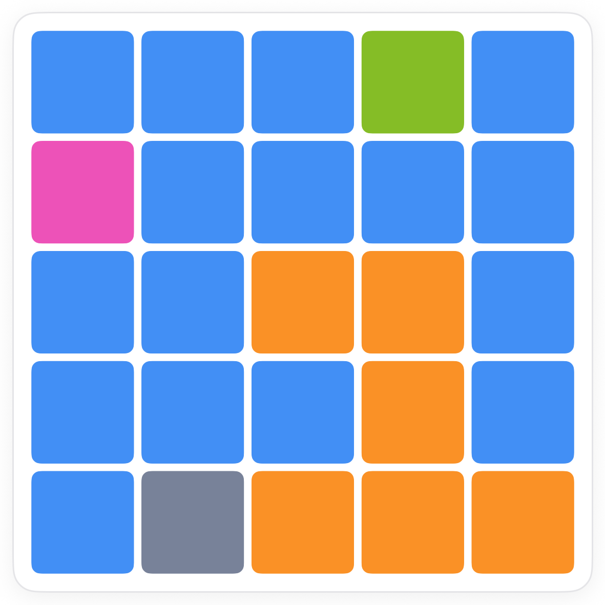
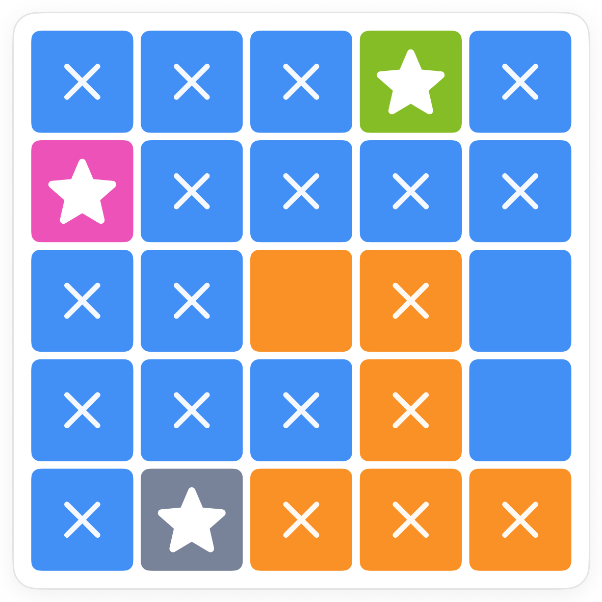
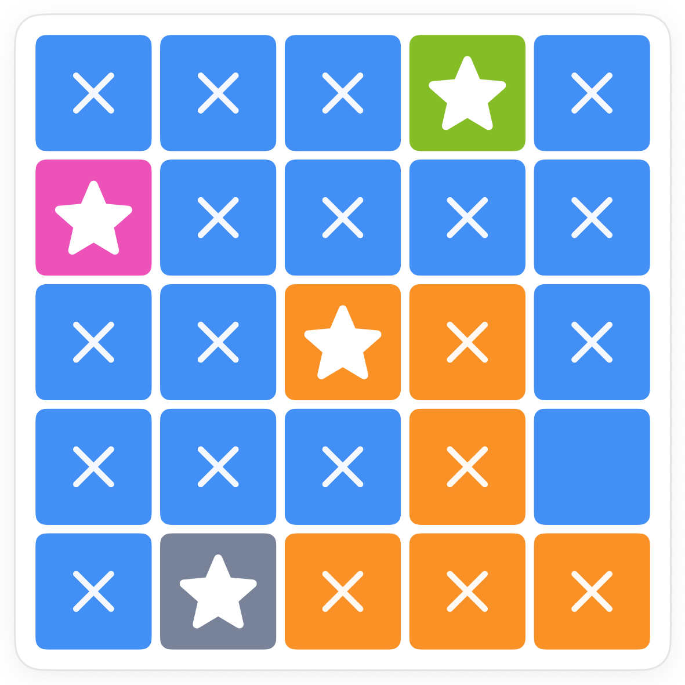
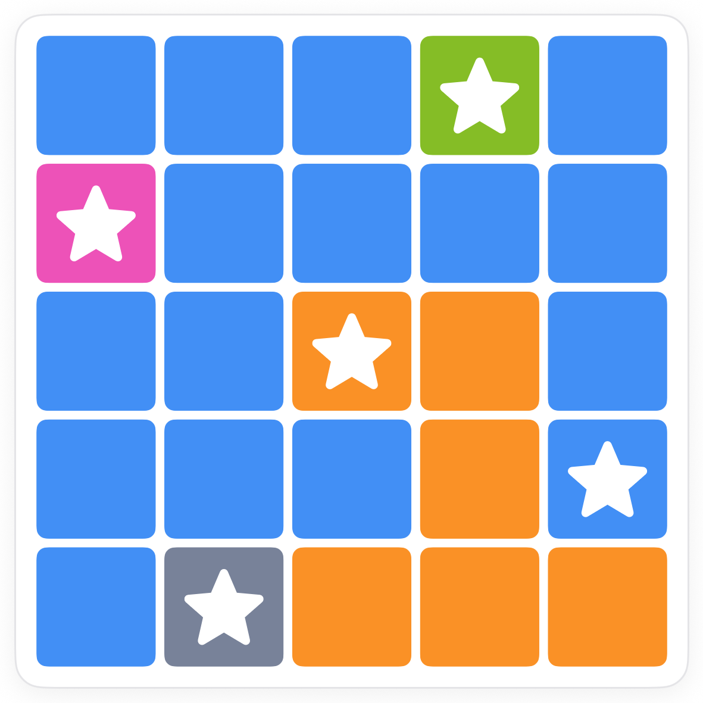

How to play Stars.
Stars is Pocketful's Star Battle. Place a star in every row, every column and every coloured region, with no two stars touching. The first board shows both deductions you will use forever.
The board.
A 5 by 5 grid split into five coloured regions. Some regions are big, some are a single square. Nothing is placed yet.

The rule.
Tap a square once for an X (you know it stays empty), twice for a star, a third time to clear it. When you place a star, the app X's every square it rules out for you.
Deduction one: a region of one square.
A region must hold a star, so a region that is only one square is solved before you start. Look for the tiny regions first.

Deduction two: what a region has left.
Now look at a region and count the squares that are not X'd. Rows and columns that already have a star knock out squares, and so do the neighbours of placed stars. Often just one square survives.


Common questions.
Can stars touch diagonally?
No. Touching at a corner counts as touching. The app's automatic X's include the diagonals for exactly that reason.
What about bigger boards?
Larger boards use the same rule. Some harder levels ask for two stars per row, column and region; the deductions are the same, the counting just doubles.